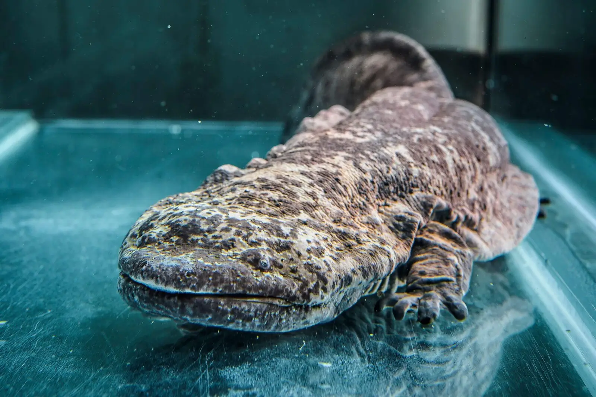
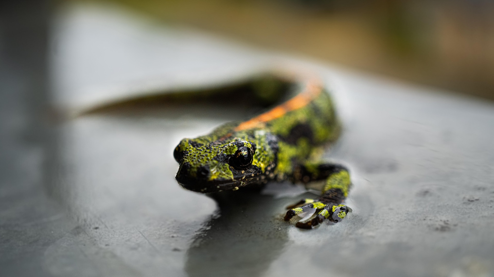

- Tamaño y Peso: Son los anfibios más grandes del mundo. La salamandra gigante china (Andrias davidianus) puede alcanzar hasta 1.8 metros de longitud y pesar cerca de 11 kg, aunque se han reportado tamaños superiores. La especie japonesa (Andrias japonicus) mide hasta 1.5 m y la americana (Cryptobranchus alleganiensis) es más pequeña, alcanzando unos 70 cm.
- Anatomía: Tienen cuerpos aplanados, cabezas grandes con ojos diminutos sin párpados y extremidades cortas y robustas. Presentan pliegues cutáneos carnosos en los costados que aumentan la superficie para la respiración cutánea.
- Dieta: Son carnívoros nocturnos, se alimentan de peces, crustáceos, insectos y otros anfibios más pequeños.
- Reproducción: Son ovíparos. Los machos cuidan los nidos de huevos, que son depositados en cadenas bajo rocas. La fertilización es externa.
- Estado de Conservación: Se encuentran bajo severas amenazas (como la especie china, en peligro crítico) debido a la pérdida de hábitat, contaminación y uso comercial/medicinal.
- Tamaño y color: Miden entre 10 y 30 cm. En su hábitat natural son oscuros (negros o marrones moteados) para camuflarse, aunque en cautiverio son comunes las variedades blancas, albinas o doradas.
- Respiración y hábitat: Son acuáticos, viven en aguas de baja temperatura. Respiran a través de branquias, piel y pulmones rudimentarios.
- Dieta: Son carnívoros, alimentándose de pequeños peces, moluscos, gusanos y crustáceos.
- Reproducción: Se reproducen sexualmente a los 12 meses de edad, realizando un cortejo conocido como "hula" donde el macho deposita espermatóforos que la hembra recoge.
- Regeneración: Tienen la asombrosa capacidad de regenerar extremidades completas, cola, corazón y médula espinal.

- Aspecto Físico: Dorso verde claro u oscuro con manchas irregulares negras o marrones. La piel del dorso es rugosa, mientras que la del vientre es lisa y clara. Poseen cuatro dedos en extremidades anteriores y cinco en posteriores.
- Dimorfismo Sexual: Las hembras son más grandes y presentan una línea anaranjada en el dorso. Los machos desarrollan una cresta dorsal y caudal prominente, ondulada y con bandas verticales oscuras durante el celo.
- Tamaño: Generalmente no supera los 135 mm de longitud total.
- Reproducción: Se reproducen en agua (charcas, fuentes, acequias). La hembra envuelve los huevos individualmente en hojas de plantas acuáticas usando sus patas traseras.
- Larvas: Se caracterizan por extremidades largas y branquias externas rojizas.